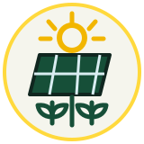
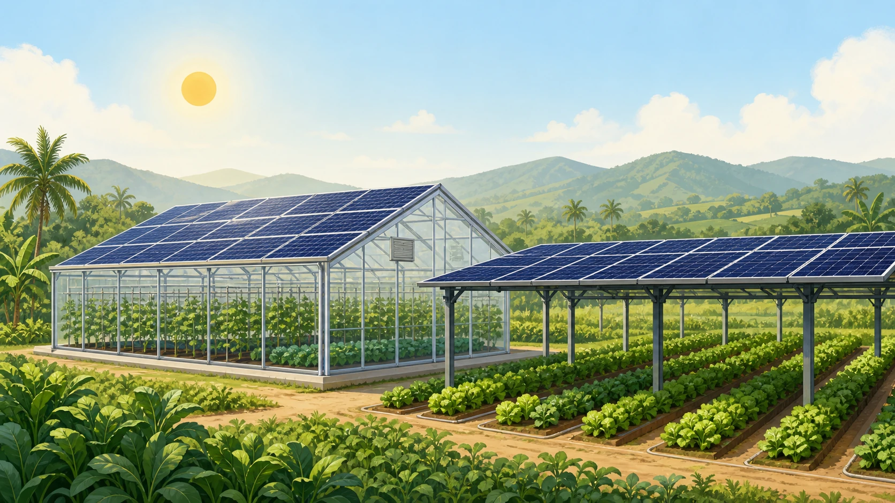

Energy
Generate clean electricity from agricultural infrastructure.
Intelligent agrivoltaic systems
SunCube designs and integrates agrivoltaic systems around the needs of each crop, local climate, and farm—turning passive shade into productive infrastructure.

Generate clean electricity from agricultural infrastructure.
Optimize light, shade, and growing conditions.
Enable monitoring, automation, and data-driven farming.

Layer 1Solar–Crop Infrastructure
SunCube designs crop-responsive agrivoltaic infrastructure that combines useful PV shading, light optimization and farm integration.

What we deliver today
PV shading designed around crop and climate needs
Crop-light optimization for healthier growing conditions
Integration with greenhouses and open-field farm systems
Foundation todayReduce heat stress, manage light and improve farm energy efficiency.
Why SunCube

Every square meter of agricultural surface can do more.
Farms already invest in shade to protect crops from heat and harsh sunlight. Traditional shade nets remain a passive cost, while conventional full-cover solar can deprive plants of the light they need.
SunCube is not a solar panel manufacturer. We are the agrivoltaic architect and system integrator that finds the right balance between crop performance, energy generation, and farm conditions.
Solutions
We start with the farm, not the panel.
Crop–light–energy simulation, site assessment, and an optimal PV arrangement tailored to each farm.
A complete agrivoltaic system integrating structures, solar, irrigation, sensors, and controls.
A progressive monitoring layer for understanding microclimate, energy, and operational performance after deployment.
Built for real farms
For high-value crops and energy-intensive controlled environments.
For shade-sensitive plants where protection is already essential.
For productive urban surfaces that generate food and power.
Our technology
SunCube Design Intelligence evaluates crop needs, local climate, and farm conditions to optimize PV layout, density, orientation, and height.
Explore a feasibility study →How we create value
SunCube starts with a paid feasibility and design engagement, then scales validated projects through trusted PV and agricultural infrastructure partners.
Assess the site, model crop and climate needs, and define the right PV layout and microclimate strategy.
Current coreCoordinate structures, solar components, irrigation, sensors, installation, and commissioning with delivery partners.
DeploymentAdd monitoring, operations insight, and energy optimization as the farm’s intelligent infrastructure matures.
Recurring servicesFeatured project
A signed paid pilot assessing optimized agrivoltaic design across an existing greenhouse and more than ten crop types.
Project details reflect the current pilot scope and are not generalized performance claims.Validate with farms. Scale through partners.
Our team
Incubated through Singapore’s National GRIP programme, SunCube brings together expertise across agrivoltaics, photovoltaics, the built environment, AI, IoT, software and commercialization.
Core team
Founder · CEO
Agrivoltaics expert shaping productive, climate-responsive farm infrastructure.
Technical Director
PV expert connecting research with real-world system delivery.
PV Technology Director
Solar researcher advancing crop-responsive PV integration.

Marketing · Branding Lead
Turns technical innovation into a clear, credible SunCube story.
IoT · Software Designer
Designs connected tools for smarter farm operations.
Principal investigator & advisors
Principal Investigator
NUS Assistant Professor and Presidential Young Professor; AI urban and building scientist with experience across NUS, MIT and Harvard GSD.
Advisor
NUS Professor and Vice Dean of the College of Design and Engineering, advising the team on the built environment and sustainable systems.
Advisor
NUS Associate Professor in the Department of the Built Environment, advising SunCube’s technology and research development.
Biographies and institutional titles should be confirmed by each member before public release.
National University of Singapore
Singapore 117566
Farms · Investors · Partners
Harvest both
crop and solar energy